So far....
Casazza Creations is my
Etsy shop name.
Up for grabs in my Etsy shop.
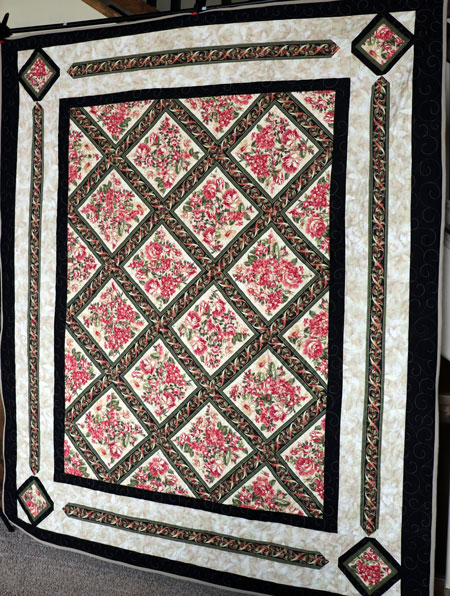
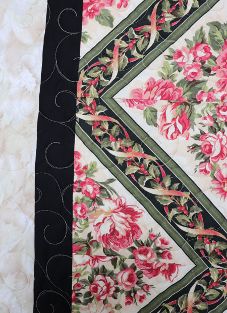
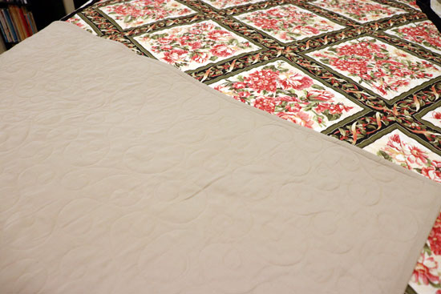
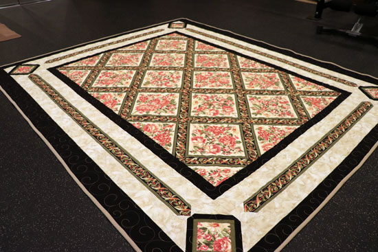
230. Mountain Sundown Lap Quilt (50 x 60)
On offer in my Etsy shop.
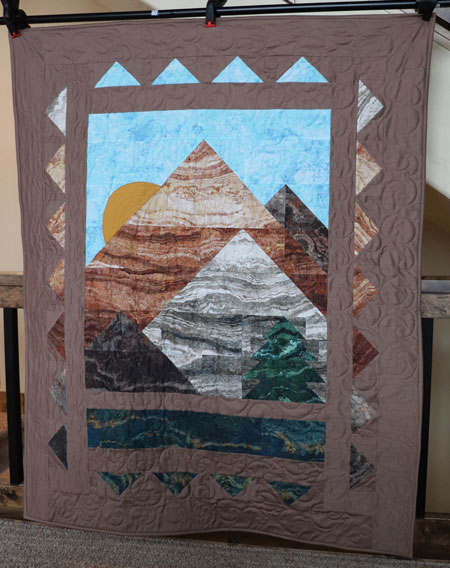
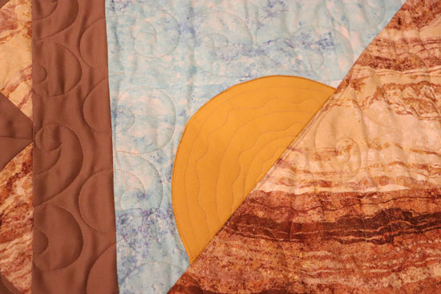
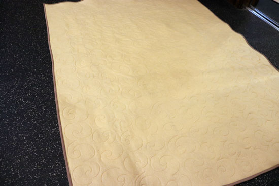
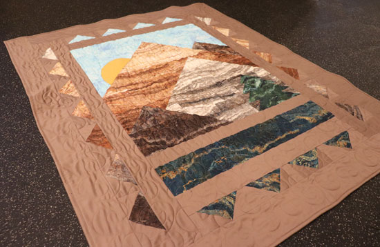
231 & 232. Candy Hearts (51 x 79)
For sale in my Etsy shop.
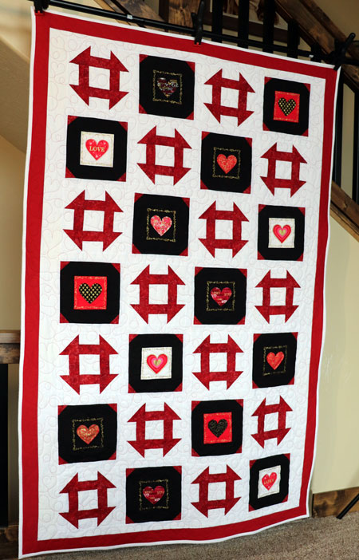
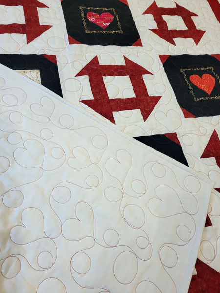
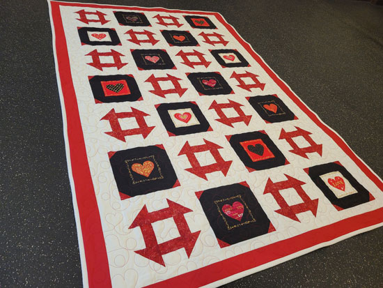
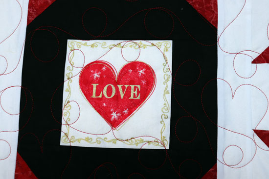
233. Awareness Hearts (51 x 58)
Purchased at the Senior Center by MIL Rose, for niece Hanna.
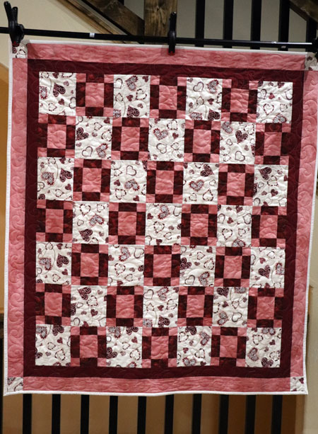
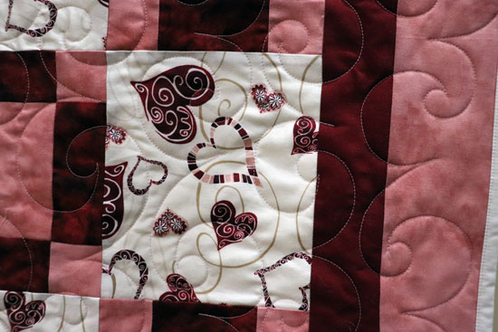
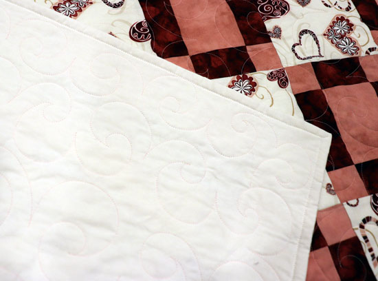
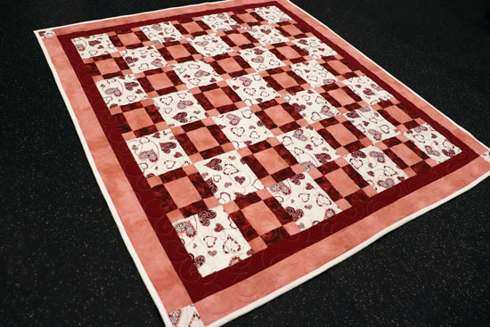
234. Wild Chickens (48 x 51)
Purchased via Etsy by one of Mom's dearest friends and a
much-appreciated frequent
customer in Westville, OK.
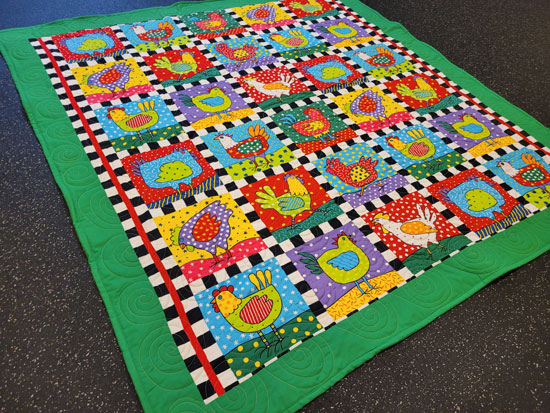
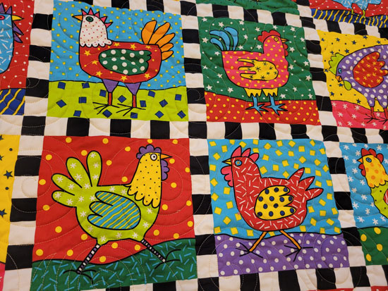
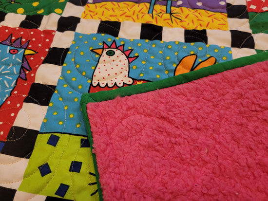
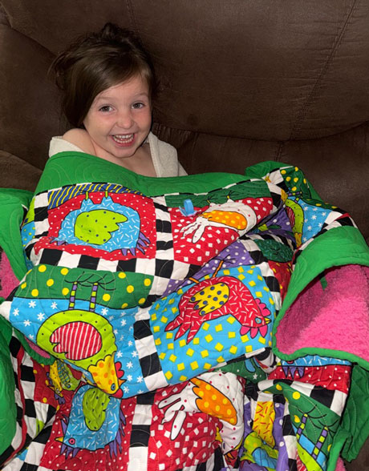
235. Rustic Flag QFH Donation Quilt (62 x 82)
Donated to the Quilts for Heroes program at EMQS 2026.
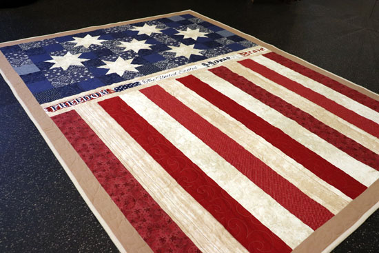
This is my new favorite QFH quilt that I've made. I
love this pattern, which isn't really a quilt
pattern at all. It was a blanket I saw for sale on
Walmart's website. I'm going to make more
of this one!
The wording across the middle reads, "Freedom", "The United States", and "Home of the Brave."
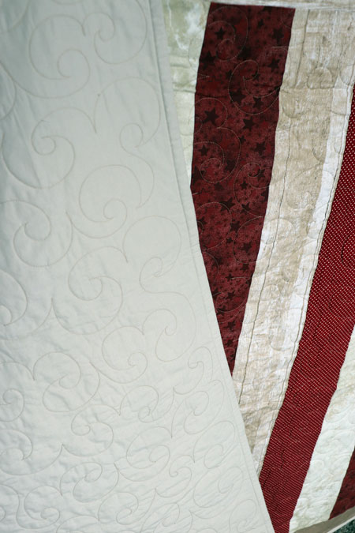
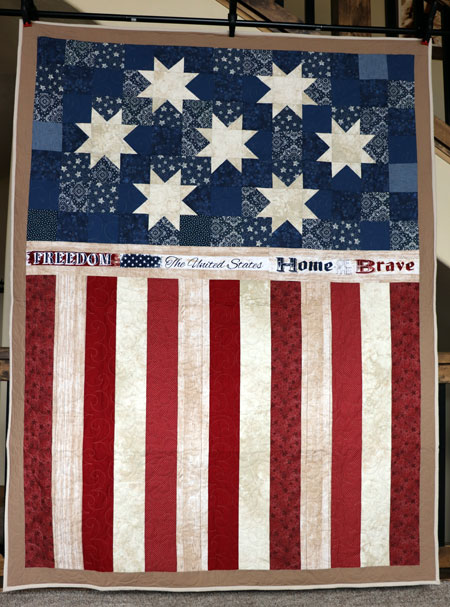
236. Lori's Perfect Peaces (71 x 71)
Purchased by high school classmate Lori.
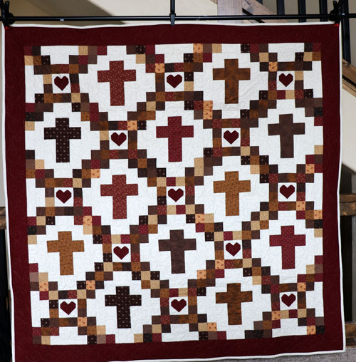
Lori had a very clear and straightforward request, use the
"Perfect Peaces"
pattern by Easy Piecy Quilts. Use browns and add a rich
red border.
I can do that!
It turned out so pretty, maybe someday I'll make another one.
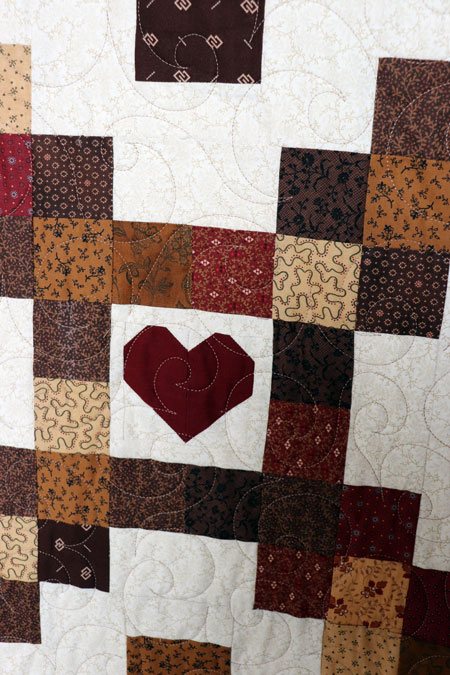
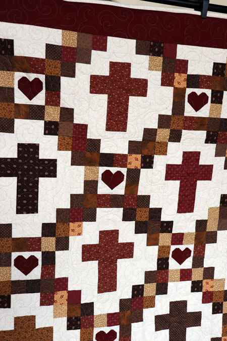
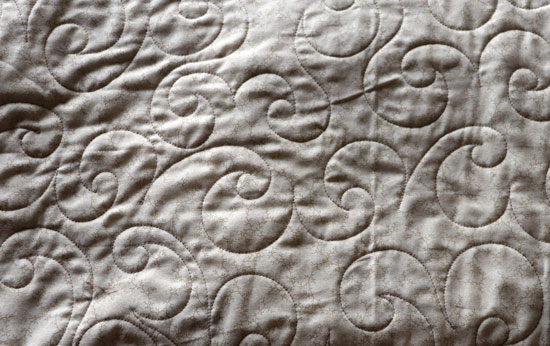
237. Madison's Wedding Shower Quilt (55 x 73)
Given to niece Madison for her wedding shower.
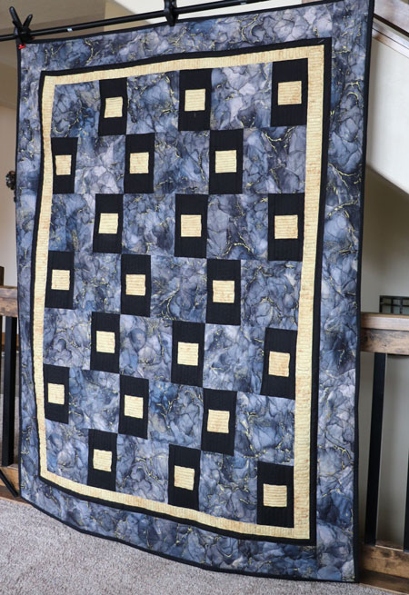
In this case, I asked her for color suggestions. She
wanted
something for her couch and said they had decorated in black,
gold, and blue. She sent a short video of their living
room and
I saw they had a cool picture of what looked like rock on the
wall.
I found this beautiful rock-like fabric called Midas and I
love it.
I was afraid of choosing the wrong shade of blue, so I went
for
black and gold as my colorway. The gold came out a
little strong
for my taste, so I tried to tone it down with black quilting
on it.
The pattern is a modification of a Fabric Cafe design, my
go-to pattern folks.
The back of this quilt is really the show-stopper.
It's the most
luxurious feeling black plush blanket. It's like crack
for your hands!
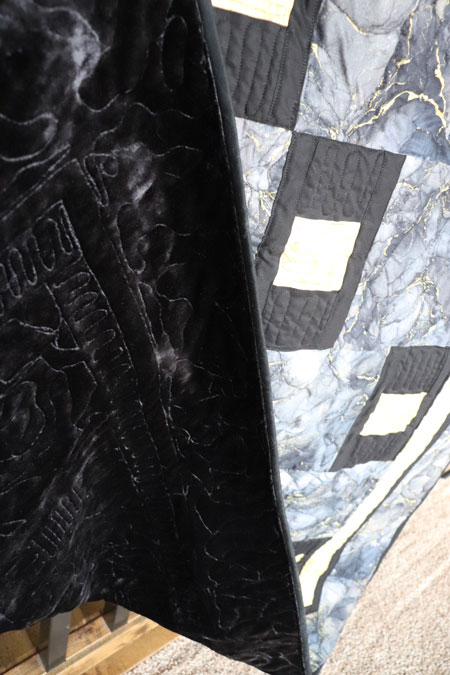
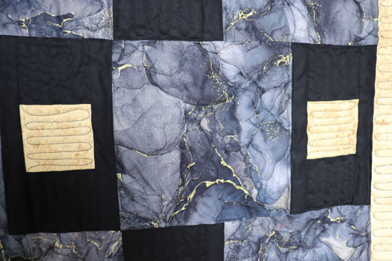
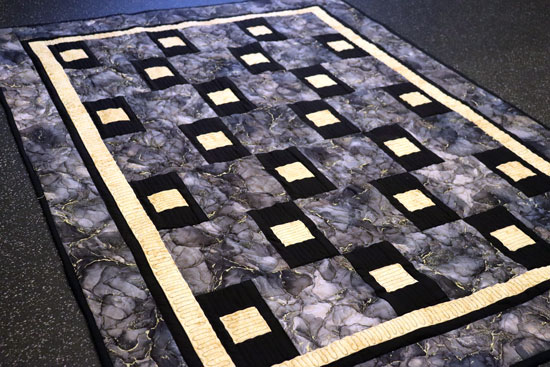